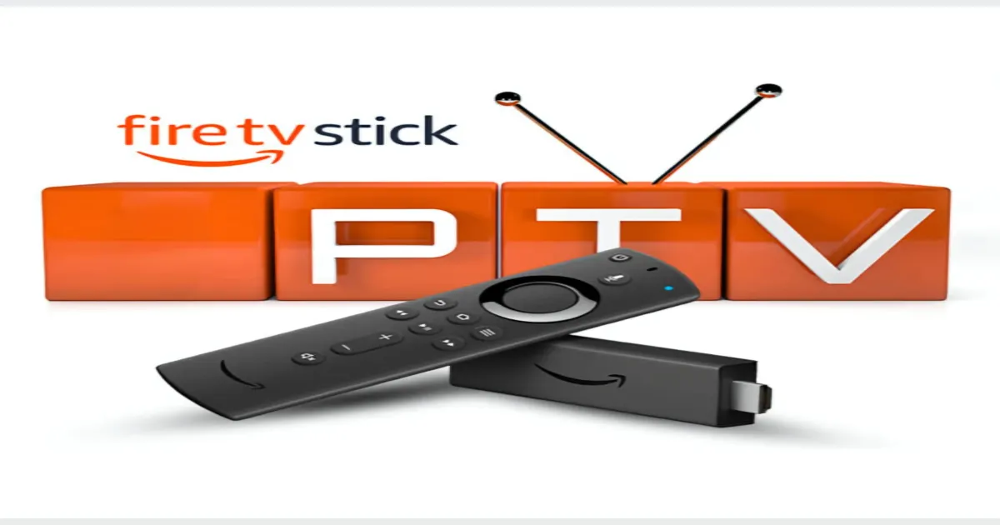
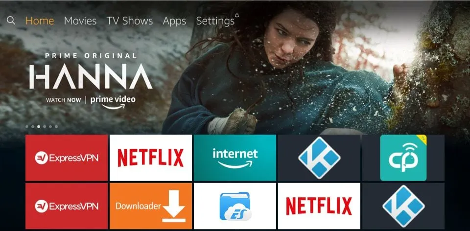
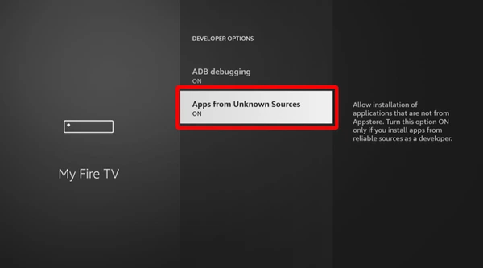
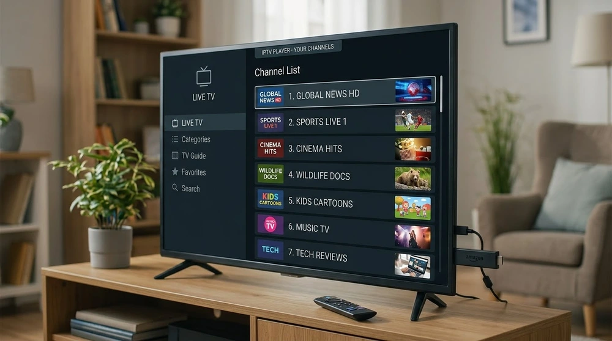

How to Set Up IPTV on Firestick: Complete Guide

The Amazon Firestick is one of the easiest ways to watch IPTV on a normal TV. It is small, inexpensive and runs the player apps most people use. Follow these steps to get a player installed and your first playlist loaded.
Before you start
Make sure your Firestick is connected to Wi-Fi, updated and signed in to your Amazon account. A quick check of your connection with the speed guidelines will save time later.

Step-by-step setup
- From the home screen, open Find, then Search, and look for your chosen player in the Amazon Appstore. Install it if it is listed.
- If the app is not in the store, install the Downloader app from the Appstore.
- Go to Settings, My Fire TV, Developer Options and allow installs from unknown sources. On newer software this is a per-app switch, so enable it for Downloader.
- Open Downloader and enter the official download address published by the player developer.
- Install the app, open it and choose how to add your source.
- Enter your playlist URL or login details and wait for channels to load.
Which player should I choose?
IPTV Smarters is simple for beginners. If you prefer a more guide-focused layout, see how to set up TiviMate on an Android-based device.

Helpful tips
- Use Ethernet through an adapter if Wi-Fi is weak.
- Restart the Firestick every few weeks to clear memory.
- Remove unused apps to free storage.

If something goes wrong
Channels loading slowly or freezing are the most common issues. Work through our buffering fixes before reinstalling anything.
Frequently asked questions
Do I need to jailbreak my Firestick?
No. Enabling installs from unknown sources in settings is all that is needed for apps outside the store.
Which Firestick model is best for IPTV?
Models with more memory and a faster processor handle large channel lists better. Older sticks work but can feel slow.
Why is my playlist not loading?
Check for typing errors in the URL, confirm your internet works in another app and make sure your access details are still active.